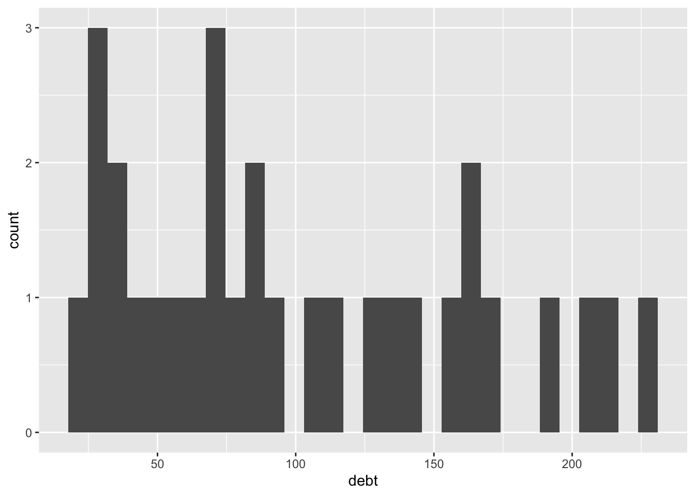

Chapter 4 A very statistical day
Lets begin with some matrices. Matrices are a good way to express a system of linear equations in a more compact form. It’s benefits include helping the reader to manipulate a system of linear equations easily and spot insights easily.
- \(\begin{array}{ccc} {\sigma}^{2} & 1\\ 1 & {\sigma}^{2} \end{array}\)
\(\small X = \begin{bmatrix} 1 & 2\\ 1 & 2\\ 1 & 2 \end{bmatrix} + \begin{bmatrix} 1 & 2\\ 1 & 2\\ 1 & 2 \end{bmatrix} + \begin{bmatrix} 1 & 2\\ 1 & 2\\ 1 & 2 \end{bmatrix} + \begin{bmatrix} 1 & 2\\ 1 & 2\\ 1 & 2 \end{bmatrix} + \begin{bmatrix} 1 & 2\\ 1 & 2\\ 1 & 2 \end{bmatrix} + \begin{bmatrix} 1 & 2\\ 1 & 2\\ 1 & 2 \end{bmatrix} + \begin{bmatrix}1 & 2 & 3 & 4 & 5 \\1 & 2 & 3 & 4 & 5 \\1 & 2 & 3 & 4 & 5 \\1 & 2 & 3 & 4 & 5 \\1 & 2 & 3 & 4 & 5 \\\end{bmatrix} + \begin{bmatrix} 1 & 2 & 3 & 4 & 5 \\1 & 2 & 3 & 4 & 5 \\1 & 2 & 3 & 4 & 5 \\1 & 2 & 3 & 4 & 5 \\1 & 2 & 3 & 4 & 5 \\\end{bmatrix}\)
- Note
- This is a matrix
- This is the first point
- This is the seccond point
\(y = mx + c + d + e + f + g + h + i + j + k + l + m + n + o + p\)
## partic tfr menwage womwage debt
## 1946 25.3 3748 25.35 14.05 18.18
## 1947 24.4 3996 26.14 14.61 28.33
## 1948 24.2 3725 25.11 14.23 30.55
## 1949 24.2 3750 25.45 14.61 35.81
## 1950 23.7 3669 26.79 15.26 38.39
## 1951 24.2 3682 26.33 14.58 26.52
## 1952 24.1 3845 27.89 15.66 45.65
## 1953 23.8 3905 29.15 16.30 52.99
## 1954 23.6 4047 29.52 16.57 54.84
## 1955 24.3 4043 32.05 17.99 65.53
## 1956 25.1 4092 32.98 18.33 72.56
## 1957 26.2 4168 32.25 17.64 69.49
## 1958 26.6 4073 32.52 18.16 71.71
## 1959 26.9 4100 33.95 18.58 78.89
## 1960 27.9 4119 34.63 18.95 84.99
## 1961 29.1 4159 35.14 18.78 87.71
## 1962 29.9 4134 34.49 18.74 95.31
## 1963 29.8 4017 35.99 19.71 104.40
## 1964 30.9 3886 36.68 20.06 116.80
## 1965 32.1 3467 37.96 20.94 130.99
## 1966 33.2 3150 38.68 21.20 135.25
## 1967 34.5 2879 39.65 21.95 142.93
## 1968 35.1 2681 41.20 22.68 155.47
## 1969 36.1 2563 42.44 23.75 165.04
## 1970 36.9 2571 42.02 25.63 164.53
## 1971 37.0 2503 45.32 26.79 169.63
## 1972 37.9 2302 45.61 27.51 190.62
## 1973 40.1 2931 45.59 27.35 209.60
## 1974 40.6 1875 48.06 29.64 216.66
## 1975 42.2 1866 46.12 29.33 224.34
## parttime
## 1946 10.28
## 1947 9.28
## 1948 9.51
## 1949 8.87
## 1950 8.54
## 1951 8.84
## 1952 8.60
## 1953 5.49
## 1954 6.67
## 1955 6.25
## 1956 6.32
## 1957 7.30
## 1958 8.65
## 1959 8.80
## 1960 9.39
## 1961 10.23
## 1962 10.77
## 1963 10.84
## 1964 11.70
## 1965 12.33
## 1966 12.18
## 1967 13.67
## 1968 13.82
## 1969 14.91
## 1970 15.52
## 1971 15.47
## 1972 15.85
## 1973 15.40
## 1974 16.23
## 1975 16.71## `stat_bin()` using `bins = 30`. Pick better
## value with `binwidth`.